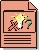

| Артефакт: Запрос изменения |
|  |
|
| Роли | Ответственный: | Изменен: |
|---|---|---|
| Задачи | Вход для:
| Выход из: |
| Основное описание | Необходимость изменений неотъемлема от разработки системы программного обеспечения, поскольку система развивается при первоначальном ее создании, и в последующем применяется и обслуживается в процессе ежедневной работы в реальной среде. Запросы на изменения предоставляют запись решения и, с помощью соответствующего процесса оценки, гарантируют, что влияние изменений является обдуманным. Запросы на изменения также известны как CR, дефекты, ошибки, инциденты, запросы на расширения. Соответственно фиксация этих запросов и управление ними гарантирует, что изменения вносятся в систему под контролем, так что их влияние на систему предсказуемо. Ниже перечислены некоторые важнейшие типы Запросов на изменения: Запросы на расширение применяются различными заинтересованными лицами для запроса будущих функциональных возможностей, которые они хотели бы включить в продукт. Этот вид Запросов заинтересованных лиц, который фиксирует и формулирует понимание потребностей заинтересованных лиц. Дефекты представляют собой отчеты об аномалиях или сбоях в конечном рабочем продукте. Дефекты включают пропуски и неполноту, обнаруженные на начальных этапах жизненного цикла, либо признаки сбоев, которые необходимо изолировать и скорректировать в программном продукте. Дефекты также могут включать отклонения от ожидаемого алгоритма работы программы (например, вопросы, связанные с удобством работы). Цель дефекта - сообщить сведения о неполадке, вызвав корректирующее действие, разрешение вопроса, и проследив происхождение неполадки. CR используется следующими сотрудниками:
|
|---|---|
| Краткая схема |
Пример формы запроса на изменение
|
| Концепции |
|---|
© Copyright IBM Corp. 1987, 2006. Все права защищены.. |